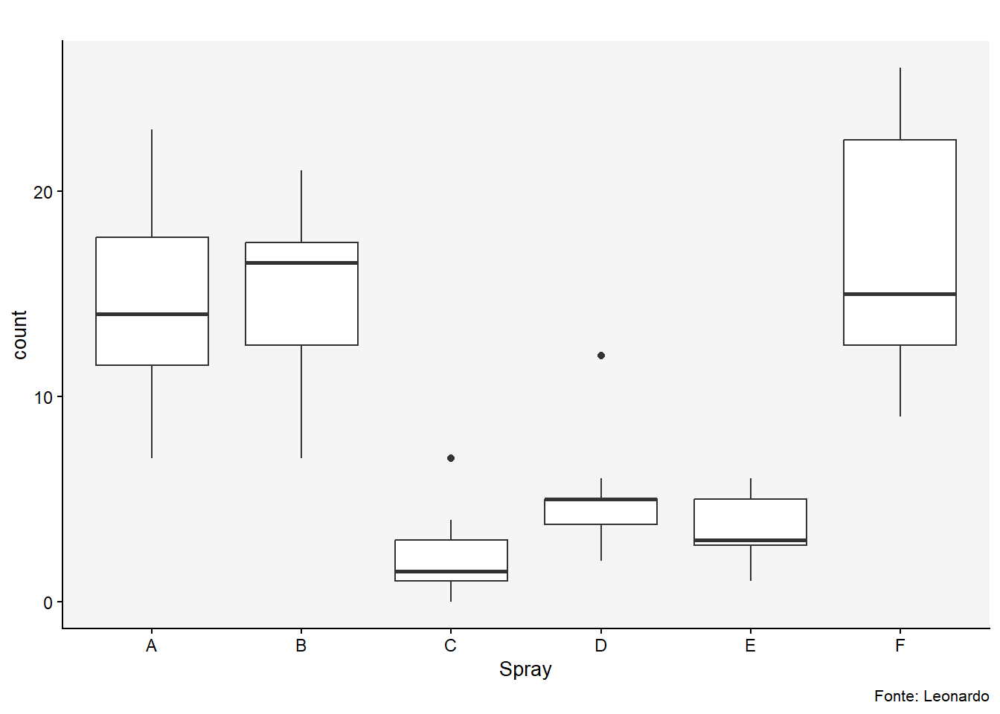
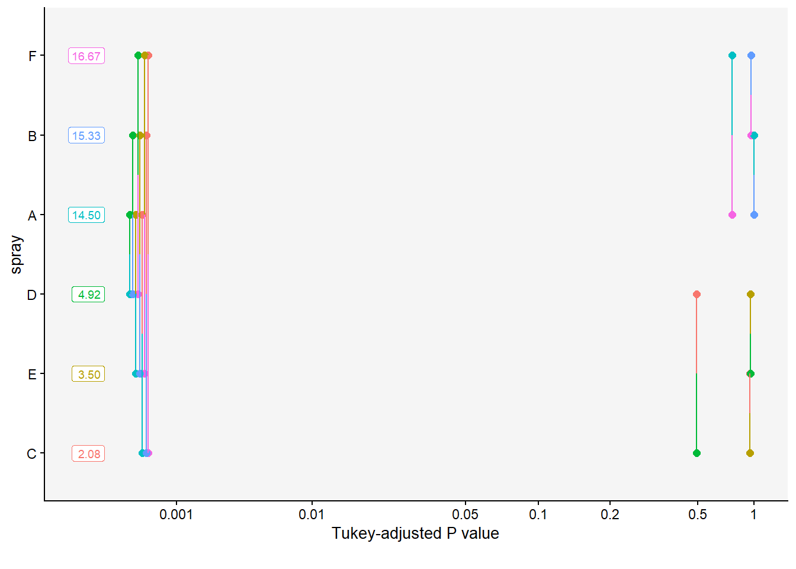
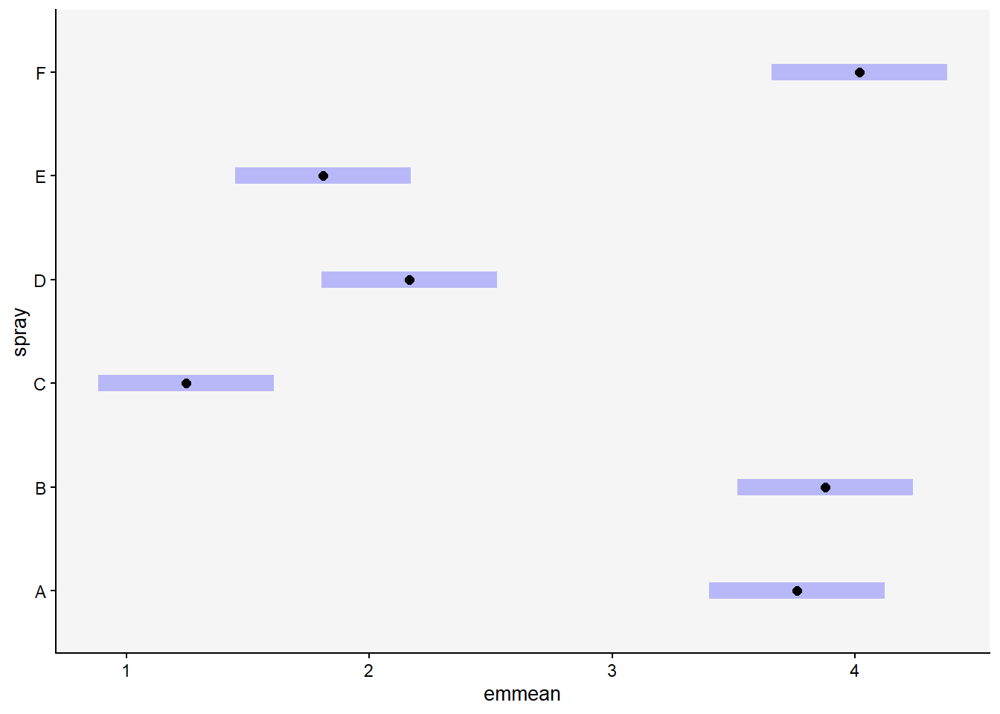
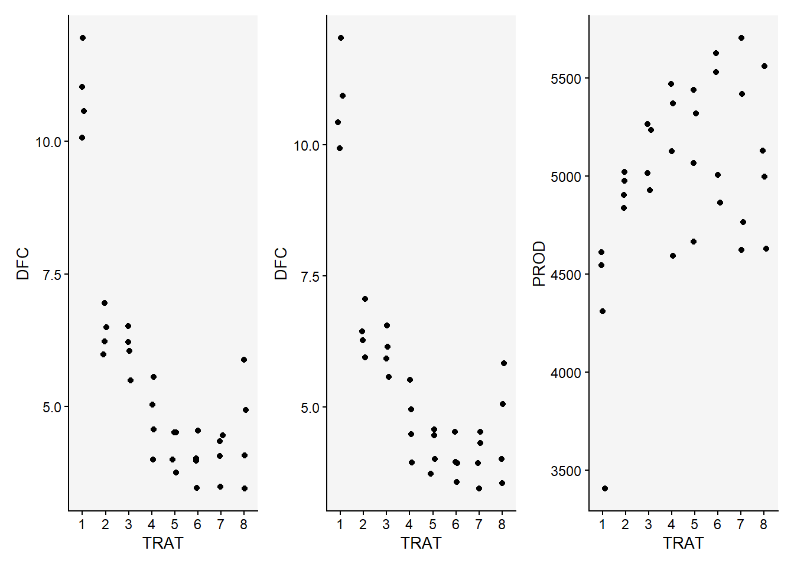
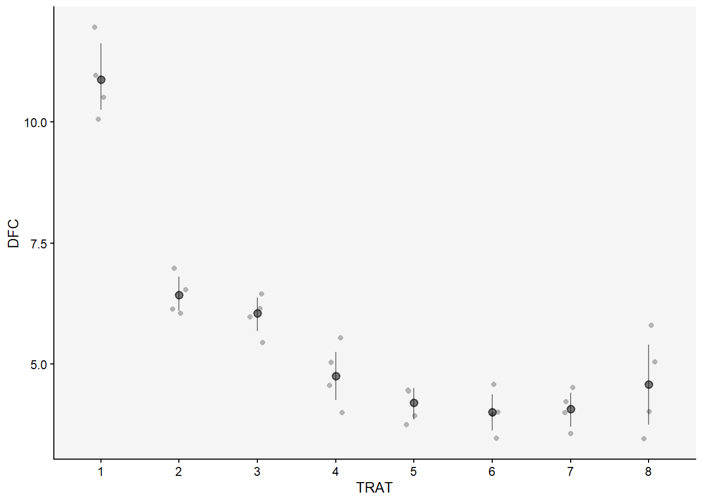

A ANOVA é usada para comparar as médias de três ou mais grupos. Ela determina se há pelo menos uma diferença significativa entre as médias de vários grupos.
## criando o objeto m1<-lm (tcm ~especie, data =esp)m1<-lm (tcm ~especie-1, data =esp)anova (m1) ## Houve diferença estatística
Analysis of Variance Table
Response: tcm
Df Sum Sq Mean Sq F value Pr(>F)
especie 5 51.677 10.3354 552.2 < 2.2e-16 ***
Residuals 25 0.468 0.0187
---
Signif. codes: 0 '***' 0.001 '**' 0.01 '*' 0.05 '.' 0.1 ' ' 1
summary (m1)
Call:
lm(formula = tcm ~ especie - 1, data = esp)
Residuals:
Min 1Q Median 3Q Max
-0.23667 -0.09667 0.01583 0.08833 0.28333
Coefficients:
Estimate Std. Error t value Pr(>|t|)
especieFasi 1.57167 0.05585 28.14 < 2e-16 ***
especieFaus 1.23667 0.05585 22.14 < 2e-16 ***
especieFcor 1.32167 0.05585 23.66 < 2e-16 ***
especieFgra 0.91167 0.05585 16.32 7.66e-15 ***
especieFmer 1.42667 0.05585 25.54 < 2e-16 ***
---
Signif. codes: 0 '***' 0.001 '**' 0.01 '*' 0.05 '.' 0.1 ' ' 1
Residual standard error: 0.1368 on 25 degrees of freedom
Multiple R-squared: 0.991, Adjusted R-squared: 0.9892
F-statistic: 552.2 on 5 and 25 DF, p-value: < 2.2e-16
library (emmeans)medias1 <-emmeans (m1, ~especie)# observar os uverlaps library(multcomp)library(multcompView)cld (medias1)## mostra as letras
especie emmean SE df lower.CL upper.CL .group
Fgra 0.912 0.0559 25 0.797 1.03 1
Faus 1.237 0.0559 25 1.122 1.35 2
Fcor 1.322 0.0559 25 1.207 1.44 2
Fmer 1.427 0.0559 25 1.312 1.54 23
Fasi 1.572 0.0559 25 1.457 1.69 3
Confidence level used: 0.95
P value adjustment: tukey method for comparing a family of 5 estimates
significance level used: alpha = 0.05
NOTE: If two or more means share the same grouping symbol,
then we cannot show them to be different.
But we also did not show them to be the same.
## testar a normalidade e hogeneidadeshapiro.test(m1$residuals)
Shapiro-Wilk normality test
data: m1$residuals
W = 0.9821, p-value = 0.8782
library(DHARMa)plot (simulateResiduals (m1))
library(performance)check_normality(m1)
OK: residuals appear as normally distributed (p = 0.878).
check_heteroscedasticity(m1)
OK: Error variance appears to be homoscedastic (p = 0.880).
inseticida |>ggplot(aes(x = spray, y = count)) +geom_boxplot() +labs(title ="", caption ="Fonte: Leonardo", x ="Spray", y ="count", family ="Arial", color ="black", size =12)

modelo1<-lm(count ~spray, data = inseticida)summary (modelo1)
Call:
lm(formula = count ~ spray, data = inseticida)
Residuals:
Min 1Q Median 3Q Max
-8.333 -1.958 -0.500 1.667 9.333
Coefficients:
Estimate Std. Error t value Pr(>|t|)
(Intercept) 14.5000 1.1322 12.807 < 2e-16 ***
sprayB 0.8333 1.6011 0.520 0.604
sprayC -12.4167 1.6011 -7.755 7.27e-11 ***
sprayD -9.5833 1.6011 -5.985 9.82e-08 ***
sprayE -11.0000 1.6011 -6.870 2.75e-09 ***
sprayF 2.1667 1.6011 1.353 0.181
---
Signif. codes: 0 '***' 0.001 '**' 0.01 '*' 0.05 '.' 0.1 ' ' 1
Residual standard error: 3.922 on 66 degrees of freedom
Multiple R-squared: 0.7244, Adjusted R-squared: 0.7036
F-statistic: 34.7 on 5 and 66 DF, p-value: < 2.2e-16
anova(modelo1)
Analysis of Variance Table
Response: count
Df Sum Sq Mean Sq F value Pr(>F)
spray 5 2668.8 533.77 34.702 < 2.2e-16 ***
Residuals 66 1015.2 15.38
---
Signif. codes: 0 '***' 0.001 '**' 0.01 '*' 0.05 '.' 0.1 ' ' 1
spray emmean SE df lower.CL upper.CL .group
C 2.08 1.13 66 -0.177 4.34 1
E 3.50 1.13 66 1.240 5.76 1
D 4.92 1.13 66 2.656 7.18 1
A 14.50 1.13 66 12.240 16.76 2
B 15.33 1.13 66 13.073 17.59 2
F 16.67 1.13 66 14.406 18.93 2
Confidence level used: 0.95
P value adjustment: tukey method for comparing a family of 6 estimates
significance level used: alpha = 0.05
NOTE: If two or more means share the same grouping symbol,
then we cannot show them to be different.
But we also did not show them to be the same.
pwpm(modelo1_medias)
A B C D E F
A [14.50] 0.9952 <.0001 <.0001 <.0001 0.7542
B -0.833 [15.33] <.0001 <.0001 <.0001 0.9603
C 12.417 13.250 [ 2.08] 0.4921 0.9489 <.0001
D 9.583 10.417 -2.833 [ 4.92] 0.9489 <.0001
E 11.000 11.833 -1.417 1.417 [ 3.50] <.0001
F -2.167 -1.333 -14.583 -11.750 -13.167 [16.67]
Row and column labels: spray
Upper triangle: P values adjust = "tukey"
Diagonal: [Estimates] (emmean)
Lower triangle: Comparisons (estimate) earlier vs. later
pwpp (modelo1_medias)

pairs(modelo1_medias)
contrast estimate SE df t.ratio p.value
A - B -0.833 1.6 66 -0.520 0.9952
A - C 12.417 1.6 66 7.755 <.0001
A - D 9.583 1.6 66 5.985 <.0001
A - E 11.000 1.6 66 6.870 <.0001
A - F -2.167 1.6 66 -1.353 0.7542
B - C 13.250 1.6 66 8.276 <.0001
B - D 10.417 1.6 66 6.506 <.0001
B - E 11.833 1.6 66 7.391 <.0001
B - F -1.333 1.6 66 -0.833 0.9603
C - D -2.833 1.6 66 -1.770 0.4921
C - E -1.417 1.6 66 -0.885 0.9489
C - F -14.583 1.6 66 -9.108 <.0001
D - E 1.417 1.6 66 0.885 0.9489
D - F -11.750 1.6 66 -7.339 <.0001
E - F -13.167 1.6 66 -8.223 <.0001
P value adjustment: tukey method for comparing a family of 6 estimates
#Estatística agora com os dados tranformados library(emmeans)modelo2_medias<-emmeans(modelo2, ~spray)plot(modelo2_medias)

library(multcomp)cld(modelo2_medias)
spray emmean SE df lower.CL upper.CL .group
C 1.24 0.181 66 0.883 1.61 1
E 1.81 0.181 66 1.447 2.17 12
D 2.16 0.181 66 1.802 2.53 2
A 3.76 0.181 66 3.399 4.12 3
B 3.88 0.181 66 3.514 4.24 3
F 4.02 0.181 66 3.656 4.38 3
Confidence level used: 0.95
P value adjustment: tukey method for comparing a family of 6 estimates
significance level used: alpha = 0.05
NOTE: If two or more means share the same grouping symbol,
then we cannot show them to be different.
But we also did not show them to be the same.
pwpm(modelo2_medias)
A B C D E F
A [3.76] 0.9975 <.0001 <.0001 <.0001 0.9145
B -0.116 [3.88] <.0001 <.0001 <.0001 0.9936
C 2.516 2.632 [1.24] 0.0081 0.2513 <.0001
D 1.596 1.712 -0.919 [2.16] 0.7366 <.0001
E 1.951 2.067 -0.565 0.355 [1.81] <.0001
F -0.258 -0.142 -2.774 -1.854 -2.209 [4.02]
Row and column labels: spray
Upper triangle: P values adjust = "tukey"
Diagonal: [Estimates] (emmean)
Lower triangle: Comparisons (estimate) earlier vs. later
modelo4_medias <-emmeans(modelo4, ~spray, type ="response")modelo4_medias
spray rate SE df asymp.LCL asymp.UCL
A 14.50 1.099 Inf 12.50 16.82
B 15.33 1.130 Inf 13.27 17.72
C 2.08 0.417 Inf 1.41 3.08
D 4.92 0.640 Inf 3.81 6.35
E 3.50 0.540 Inf 2.59 4.74
F 16.67 1.179 Inf 14.51 19.14
Confidence level used: 0.95
Intervals are back-transformed from the log scale
cld(modelo4_medias)
spray rate SE df asymp.LCL asymp.UCL .group
C 2.08 0.417 Inf 1.41 3.08 1
E 3.50 0.540 Inf 2.59 4.74 12
D 4.92 0.640 Inf 3.81 6.35 2
A 14.50 1.099 Inf 12.50 16.82 3
B 15.33 1.130 Inf 13.27 17.72 3
F 16.67 1.179 Inf 14.51 19.14 3
Confidence level used: 0.95
Intervals are back-transformed from the log scale
P value adjustment: tukey method for comparing a family of 6 estimates
Tests are performed on the log scale
significance level used: alpha = 0.05
NOTE: If two or more means share the same grouping symbol,
then we cannot show them to be different.
But we also did not show them to be the same.
Anova em Blocos Casualizados
soja <-gsheet2tbl("https://docs.google.com/spreadsheets/d/1bq2N19DcZdtax2fQW9OHSGMR0X2__Z9T/edit#gid=866852711")#preciso determinar os fatores soja <- soja |>mutate (TRAT =as.factor(TRAT),Bloco =as.factor(BLOCO))dfc <- soja|>ggplot(aes(TRAT, DFC))+geom_jitter (width =0.1)fer <- soja|>ggplot(aes(TRAT, DFC))+geom_jitter (width =0.1)prod <- soja|>ggplot(aes(TRAT, PROD))+geom_jitter (width =0.1)library(patchwork)dfc|fer|prod

## plot intervalo de confiança library(Hmisc)dfc <- soja |>ggplot (aes (TRAT, DFC))+geom_jitter (width =0.1, color ="gray70") +stat_summary(fun.data ="mean_cl_boot", color ="black", alpha =0.5)dfc

## Anova DFCaov_dfc <-lm(DFC ~TRAT + BLOCO, data = soja)anova(aov_dfc)
Analysis of Variance Table
Response: DFC
Df Sum Sq Mean Sq F value Pr(>F)
TRAT 7 149.299 21.3284 53.6182 9.56e-13 ***
BLOCO 1 0.001 0.0010 0.0025 0.9604
Residuals 23 9.149 0.3978
---
Signif. codes: 0 '***' 0.001 '**' 0.01 '*' 0.05 '.' 0.1 ' ' 1
check_heteroscedasticity(aov_dfc)
OK: Error variance appears to be homoscedastic (p = 0.247).
check_normality(aov_dfc)
OK: residuals appear as normally distributed (p = 0.946).
TRAT emmean SE df lower.CL upper.CL .group
6 4.00 0.315 23 3.35 4.65 A
7 4.08 0.315 23 3.42 4.73 A
5 4.20 0.315 23 3.55 4.85 A
8 4.58 0.315 23 3.92 5.23 AB
4 4.75 0.315 23 4.10 5.40 AB
3 6.05 0.315 23 5.40 6.70 BC
2 6.42 0.315 23 5.77 7.08 C
1 10.88 0.315 23 10.22 11.53 D
Confidence level used: 0.95
P value adjustment: tukey method for comparing a family of 8 estimates
significance level used: alpha = 0.05
NOTE: If two or more means share the same grouping symbol,
then we cannot show them to be different.
But we also did not show them to be the same.
## Anova FERaov_fer <-lm(FER ~TRAT + BLOCO, data = soja)anova(aov_fer)
Analysis of Variance Table
Response: FER
Df Sum Sq Mean Sq F value Pr(>F)
TRAT 7 978.87 139.838 56.9268 5.03e-13 ***
BLOCO 1 0.56 0.564 0.2296 0.6363
Residuals 23 56.50 2.456
---
Signif. codes: 0 '***' 0.001 '**' 0.01 '*' 0.05 '.' 0.1 ' ' 1